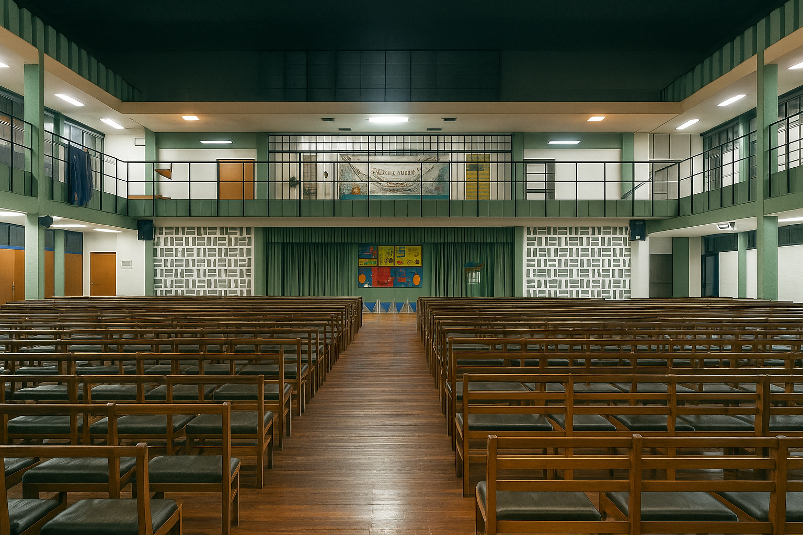

Historia Institucional de la Escuela Dr. Luis María Drago
Desde sus inicios en 1949 como anexo nocturno de la Escuela Nacional de Comercio Manuel Belgrano, la actual Escuela de Educación Secundaria Orientada Nº 435 "Dr. Luis María Drago" ha transitado un camino de crecimiento constante. Oficializada en 1961 y nombrada en homenaje al jurista argentino en 1969, logró su edificio propio en 1978 y fue transferida a la órbita provincial en 1993. Con sus tres turnos activos, continúa comprometida con una educación pública de calidad en la zona sur de Rosario.

Un legado de compromiso educativo y crecimiento institucional...
Desde el 1º de julio de 1949, se produce un hecho significativo en la historia educativa de la zona sur de Rosario: el Instituto de Enseñanza Gratuita "Zona Sud", ubicado en la calle Ayolas 1262, es adscripto al primer año de la prestigiosa Escuela Nacional de Comercio "Manuel Belgrano". A partir de ese momento, comienza a funcionar en horario nocturno, abriendo así nuevas posibilidades de formación para jóvenes y adultos que, por razones laborales u otras responsabilidades, no podían asistir a clases en horarios convencionales. Esta iniciativa respondió a la creciente demanda de acceso a la educación comercial en sectores populares y constituyó un paso fundamental en el fortalecimiento de la educación pública. En el año 1951, ante el incremento de la matrícula y la necesidad de brindar mayores oportunidades educativas, se gestionó la habilitación del turno vespertino. Parte de las actividades de este nuevo turno comenzaron a desarrollarse en las instalaciones de la Escuela Provincial Nº 79, en una clara muestra de colaboración entre instituciones para sostener el crecimiento de la oferta educativa. Una década más tarde, en 1961, se alcanza un nuevo hito institucional con la oficialización del establecimiento como Escuela Nacional de Comercio. Este reconocimiento consolida su funcionamiento dentro del sistema educativo nacional, fortaleciendo su estructura organizativa y académica.
En enero de 1969, mediante la Resolución Ministerial Nº 49/69, la institución recibe con orgullo el nombre de "Dr. Luis María Drago", en homenaje a la destacada figura del jurista, diplomático y político argentino. Esta denominación no solo honra su legado, sino que también otorga identidad propia al establecimiento dentro de la comunidad educativa y social. El 27 de mayo de 1978, se concreta un anhelo largamente esperado: la inauguración del edificio propio en su actual emplazamiento de calle Buenos Aires 5318. A partir de entonces, y hasta la actualidad, funcionan allí los tres turnos —mañana, tarde y noche— que garantizan una oferta educativa amplia y diversa, adaptada a las necesidades de distintos perfiles de estudiantes. Finalmente, en el marco del proceso de transferencia de las escuelas nacionales a las jurisdicciones provinciales, en el año 1993 la institución pasa a depender del Estado Provincial. Desde ese momento, adopta su actual denominación: Escuela de Educación Secundaria Orientada Nº 435 "Dr. Luis María Drago", continuando su compromiso con la formación integral de las y los jóvenes de la comunidad..